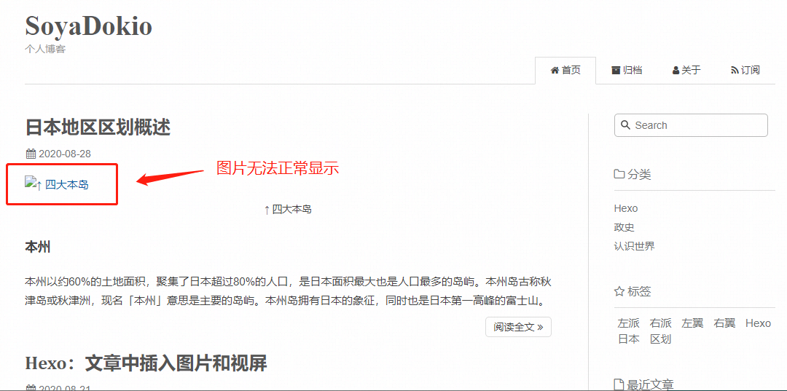
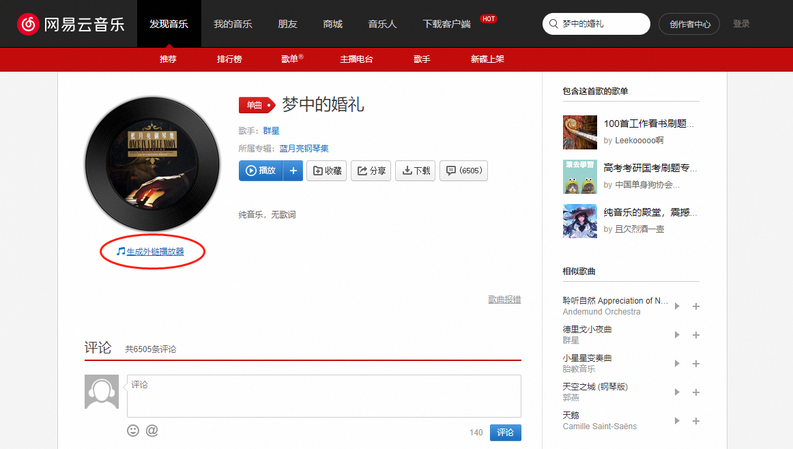
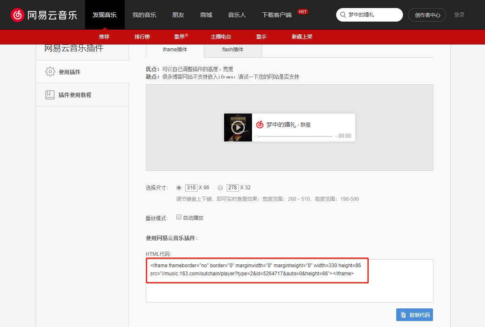
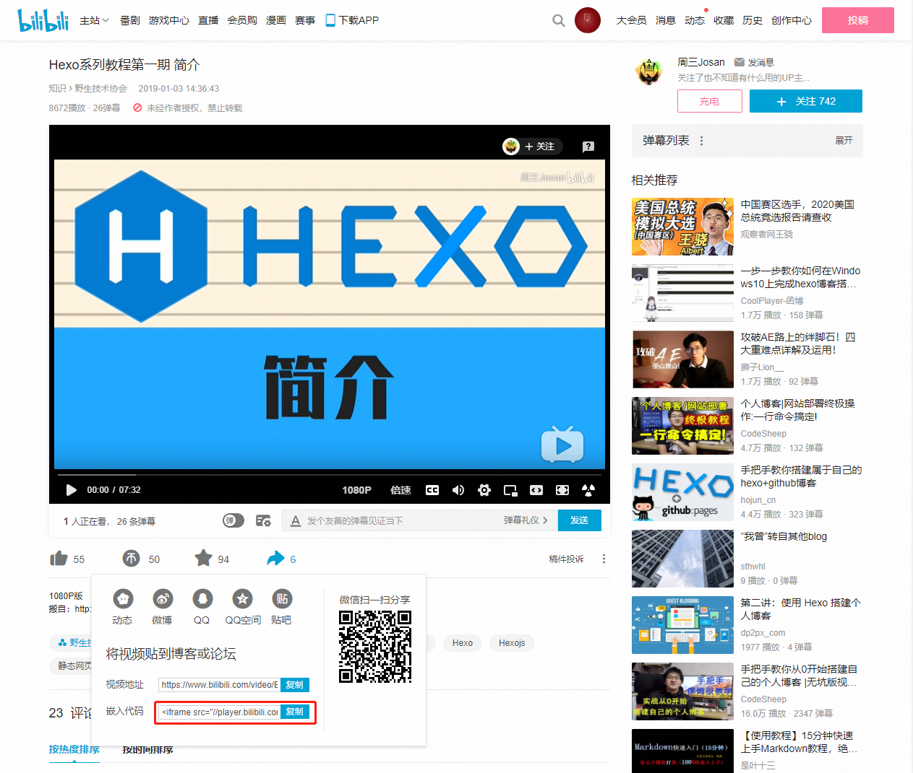

Hexo：多媒体的引用
条评论在写文章时，插入图片，音频和视频能令文章通俗易懂，生动形象。为满足 Hexo 作文时的插图片 / 音频 / 视频需求，在网上查阅后整理归纳得到此文。
图片引用
根据图片类型可分为静态图和动态图，据我试验两者语法通用，故不单独列出动态图的引用。也可根据图片存储位置分为本地引用和外链引用。
本地图片引用
绝对路径
引用绝对路径时将 {hexo-root}/source/ 当作绝对路径的跟目录。建议在 source 目录下新建一个专门用作存储图片的目录（如本例中为 images)，用以保持 source 目录的整洁。
引用绝对路径的图片既 可以在博客首页的文章预览中正常显示 *，也 可以在文章正文中正常显示 。
注：文章摘要中有图片或虽未设摘要但文章第一段含有图片时，博客首页的文章预览中会展示图片。
1 |  |
相对路径
图片除了可以统一放在 {hexo-root}/source/ 目录中，还可以放在文章自己的目录中。要使用这一功能，需要先修改博客配置文件。
打开博客配置文件 {hexo-root}/_config.yml，找到post_asset_folder 选项并改为 true 以启用该功能。
1 | post_asset_folder: true |
然后在命令行执行下列命令生成文章：
1 | $ hexo new test_article |
命令执行成功后，在 {hexo-root}/source/_posts/ 目录中就生成了文章文件 test_article.md 和同名目录 test_article，随后将待引用图片放在test_article 目录中，就可以在文章中使用相对路径引用图片资源了。
1 |  |
但值得注意的是，使用相对路径引用时，图片虽然可以在文章正文中正常显示，但 无法 在博客首页的文章预览中正常显示。

如果希望图片在文章正文和博客首页的文章预览中均可正常显示，就必须放弃 Markdown 通用的引用方式，改用 Hexo 标签插件的专用语法。示例如下：
1 | {% asset_img relative_image_name.png 'description of this image' %} |
其中 asset_img 为固定语法，后两者分别为图片文件名和图片描述（可省略）。
外链图片引用
除了在本地存储图片，还可以将图片上传到一些图床中，服务商不仅支持图片外联，还提供 CDN 服务，以便于图片在全球各处均可高效访问。
在图床中上传图片后，会生成对应的 URL 地址，使用 Markdown 语法引用图片即可。
免费图床推荐：
- Cloudinary*
- 路过图床
注：Cloudinary 的官网国内访问不畅（但外链图片访问正常）；官网全英文界面
1 |  |
音频引用
音频引用分为本地引用和外链引用。本地引用没有音乐播放器的话会比较丑，自建播放器的话可参考 用 CSS 和 JS 实现的简易的音乐播放器。外链引用的话，平台很多，比如音乐类有网易、QQ、虾米等，电子书有蜻蜓 FM、喜马拉雅、荔枝等。
各个平台大同小异，本文采用网易云音乐举例。
进入歌曲《梦中的婚礼》的页面，点击生成外链播放器。

外链播放器有些自定义选项可供用户选择，修改选项后可实时查看预览。插件类型有 iframe 和 flash，考虑到 Adobe 已放弃 flash，即将停止技术支持，建议选择前者。尺寸也有两种样式可选，前者很是常见，后者更简洁尺寸更小。最后还有是否自动播放的选项，我取消了，防止打扰用户。以上自定义选项若有改动，会自动反应在下文的 HTML 代码中，故无需手动生成，直接复制 HTML 代码即可。

将外链播放器的 HTML 代码粘贴到 Markdown 中，保存后启动服务器即可查看预览效果。
1 | <iframe frameborder="no" border="0" marginwidth="0" marginheight="0" width=330 height=86 src="//music.163.com/outchain/player?type=2&id=5264717&auto=0&height=66"></iframe> |
视频引用
类似音频，视频同样分为本地引用和外链引用。前者很丑，此处略过不提。后者的话也有很多平台选择，如优爱腾，各个平台大同小异，本文选择 B 站举例。
进入计划引用视频的页面，找到分享按钮，复制其中 HTML 代码。

将外链播放器的 HTML 代码粘贴到 Markdown 中，保存后启动服务器即可查看预览效果。
1 | <iframe src="//player.bilibili.com/player.html?aid=39807850&bvid=BV1Vt411z7Nt&cid=69927212&page=1" scrolling="no" border="0" frameborder="no" framespacing="0" allowfullscreen="true"></iframe> |
算是能看，但是太小观看不便，且未置中并不美观，据说移动端还无法自适应，参考 hexo 博客插入图片与视频方法 修改代码后完美解决。
1 | <div style="position: relative; width: 100%; height: 0; padding-bottom: 75%;"> |
参考文献
[1]Yan Yinhong.Hexo 博客搭建之在文章中插入图片[EB/OL].https://yanyinhong.github.io/2017/05/02/How-to-insert-image-in-hexo-post/,2017-05-02.
[2]Super 苏志高.hexo 博客插入图片与视频方法[EB/OL].https://zhuanlan.zhihu.com/p/104996801,2020-02-04.
[3]Hexo 官方.Hexo 官方文档[EB/OL].https://hexo.io/zh-cn/docs/,2020-08-31.
[4] 疾风_KANA.markdown 如何嵌入视频、音频[EB/OL].https://www.jianshu.com/p/3525536f9dcd,2019-10-01.